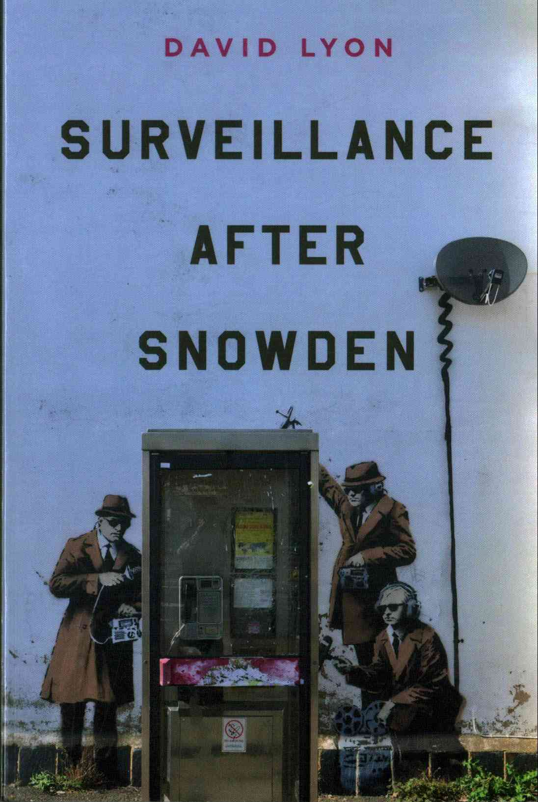

|

En 2013, Edward Snowden reveló que la NSA y sus socios habían estado realizando una vigilancia masiva sin orden judicial, utilizando datos de Internet y teléfonos celulares, y motivados por el miedo al terrorismo bajo el signo de 'seguridad'. En este relato convincente, el experto en vigilancia David Lyon guía al lector a través de las revelaciones en curso de Snowden: los cambios tecnológicos involucrados, el aumento constante de la vigilancia invisible de ciudadanos inocentes, la colusión de agencias gubernamentales y empresas con fines de lucro y las implicaciones de cómo concebimos privacidad en una sociedad democrática infundida por el atractivo de los grandes datos. Lyon discute las distintas reacciones globales a Snowden y muestra por qué se deben enfrentar algunos problemas básicos: cómo enmarcamos la vigilancia y el lugar del ser humano en un mundo digital. "La vigilancia después de Snowden" es una lectura crucial para cualquier persona interesada en política, tecnología y sociedad. |